PEOPLES DEMOCRATIC REPUBLIC OF ALGERIA
'By the people, for the people'
Acting President
- Ferhat Abbas.
- Political Party: N.L.F.
- In Office From: 19 September 1958 .
- In Office until: 9 August 1961.
- Born: 26 December 1916.
- Died: 11 April 2012.
- Aged: 95 Years Old.
Acting President
- Benyoucef Benkhedda.
- Political Party: N.L.F.
- In Office From: 9 August 1961.
- In Office until: 27 September 1962.
- Born: 23 February 1920.
- Died: 4 February 2003.
- Aged: 82 Years Old.

Acting President
- Abderrahmane Farès.
- Political Party: N.L.F.
- In Office From: 13 April 1962.
- In Office until: 25 September 1962.
- Born: 30 January 1911.
- Died: 13 May 1991.
- Aged: 80 Years Old.
Acting President
- Ferhat Abbas.
- Political Party: N.L.F.
- In Office From: 27 September 1962.
- In Office until: 19 June 1965.
- Born: 26 December 1916.
- Died: 11 April 2012.
- Aged: 95 Years Old.
FIRST PRESIDENT
- Ahmed Ben Bella
- Political Party: N.L.F.
- In Office From: 27 September 1962.
- In Office until: 19 June 1965 [Deposed in a Coup].
- Born: 26 December 1916.
- Died: 11 April 2012.
- Aged: 95 Years Old.

Acting President
- Houari Boumédiène
- Political Party: MILITARY
- In Office From: 19 June 1965.
- In Office Until: 10 December 1976.
- Born: 23 August 1932.
- Died: 27 December 1978 [in Office].
- Aged: 46 Years Old.
SECOND PRESIDENT
- Houari Boumédiène
- Political Party: N.L.F.
- In Office From: 10 December 1976.
- In Office Until: 27 December 1978.
- Born: 23 August 1932.
- Died: 27 December 1978 [in Office].
- Aged: 46 Years Old.
Interim President
- Rabah Bitat.
- Political Party: N.L.F.
- In Office From: 27 December 1978.
- In Office Until: 9 February 1979.
- Born: 19 December 1925.
- Died: 10 April 2000.
- Aged: 74 Years Old.
FOURTH PRESIDENT
- Chadli Bendjedid.
- Political Party: N.L.F.
- In Office From: 9 February 1979.
- In Office Until: 11 January 1992.
- Born: 14 April 1929.
- Died: 6 October 2012.
- Aged: 83 Years Old.

Acting President
- Abdelmalek Benhabylès
- Political Party: N.L.F.
- In Office From: 11 January 1992.
- In Office Until: 14 January 1992
- Born: 27 April 1921.
- Died: 28 December 2018.
- Aged: 97 Years Old.

Chairman of the High Council of State
- Lejen Mohamed Boudiaf
- Political Party: P.R.S.
- In Office From: 16 January 1992.
- In Office Until: 29 June 1992
- Born: 23 June 1919.
- Died: 29 June 1992 [Assassinated].
- Aged: 73 Years Old.
Chairman of the High Council of State
- Ali Kafi
- Political Party: N.L.F.
- In Office From: 2 July 1992.
- In Office Until: 31 January 1994.
- Born: 7 October 1928.
- Died: 16 April 2013.
- Aged: 84 Years Old.
EIGHTH PRESIDENT


- Liamine Zeroual
- Political Party: Independent
- In Office From: 31 January 1994.
- In Office Until: 27 April 1999.
- Born: 3 July 1941.
- Aged: 81 Years Old.
NINETH PRESIDENT
- Abdelaziz Bouteflika
- Political Party: Independent.
- In Office From: 27 April 1999.
- In Office Until: 2 April 2019 [Resigned].
- Born: 2 March 1937.
- Died: 17 September 2021.
- Aged: 84 Years Old.
Interim President
- Abdelkader Bensalah
- Political Party: lndependent.
- In Office From: 9 April 2019.
- In Office Until: 19 December 2019.
- Born: 24 November 1941.
- Died: 22 September 2021.
- Aged: 79 Years Old.
ELEVENTH PRESIDENT

Incumbent President
- Abdelmadjid Tebboune
- Political Party: Independent
- In Office From: 19 December 2019.
- In Office Until: Present.
- Born: 17 November 1945.
- Aged: 77 Years Old.